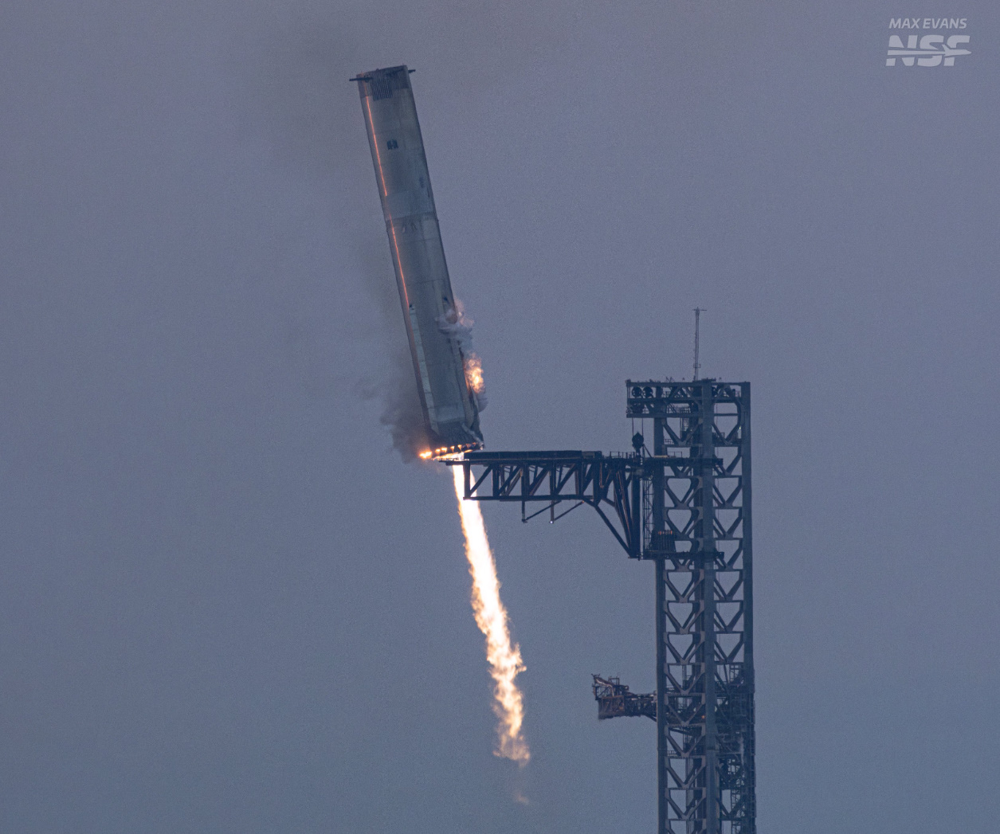

In more recent news, humans have finally developed the technology to allow rockets to re-enter the atmosphere without degradation. Thanks to the work at SpaceX, a successful rocket-landing test was completed with their fifth starship
This is a huge development for humanity’s prospects for interstellar travel. Eliminating the need to fund rocket after rocket for missions and testing will accelerate the development of space flight by an indescribable margin.
